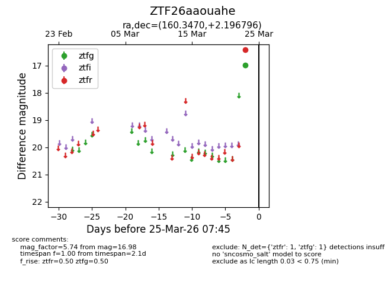
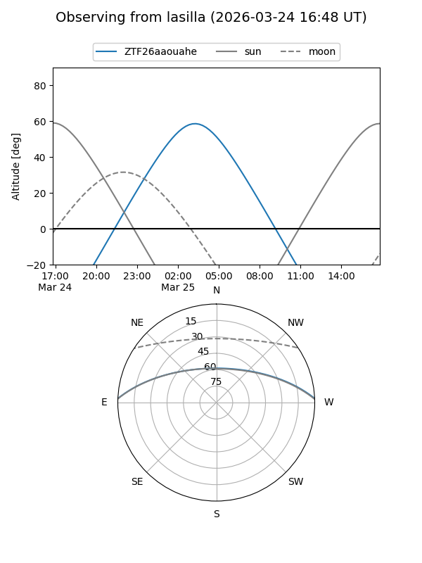
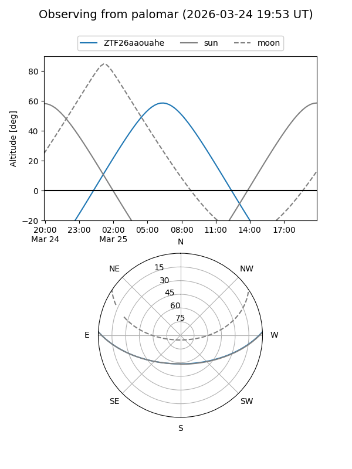

ZTF26aaouahe
Target ZTF26aaouahe at 2026-03-25 07:48
Aliases and brokers:
FINK: link
Lasair: link
ALeRCE: link
alt names
ZTF26aaouahe (ztf,fink_ztf)
Coordinates:
equatorial (ra, dec) = 160.3470,+2.19680
equatorial (HMS+DMS) = 10:41:23.28,+02:11:48.47
galactic (l, b) = (246.0318,+50.12378)
Flags:
Photometry:
last ztfg=16.98, ztfr=16.43
1 ztfg, 1 ztfr detections
Lightcurve

Visibility


Additional plots